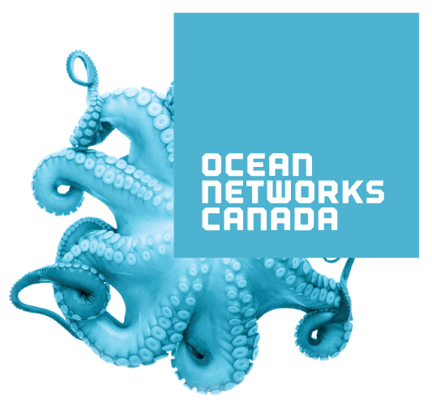

Canada: +1 604 398 4998
Sample Science Projects
The following are examples of major science based projects completed by OceanWorks International's seafloor network technology.
The Victoria Experimental Network Under the Sea (VENUS) is a cabled ocean observatory located off the coast of British Columbia, connected to researchers and observers by electro-fibre optic cables. VENUS development and operation was initiated by the University of Victoria (UVic) and now forms part of the Ocean Networks Canada Observatory. OceanWorks designed and built the subsea elements of VENUS and continues to work in close cooperation with UVic as the capabilities of the network expand and improve.
The first observatory, in the Saanich Inlet, consists of a single node 4 km from shore and can support up to eight SIIMs. This facility is an example of a Near Shore system and has been providing live data to the scientific community since February 2006.
The second observatory, in the Strait of Georgia, consists of two (2) nodes 30 km and 40 km from shore on a single cable. Each node can support up to eight (8) SIIMs and has been operational since February 2008 (Press Release).
OceanWorks completed a major upgrade of all three VENUS nodes in 2011 and built an additional eight SIIMs (Press Release).
For more information on VENUS please visit: venus.uvic.ca

NEPTUNE Canada is the world’s first regional-scale cabled observatory network. It is also part of the Ocean Networks Canada Observatory, and is located off the west coast of Vancouver Island, British Columbia. The network, which extends across the Juan de Fuca plate, gathers live data from a rich constellation of instruments deployed in a broad spectrum of undersea environments.
NEPTUNE Canada consists of an 800 km electro-fiber optic cable loop with five primary nodes. OceanWorks designed and built 14 highly capable SIIMs (also known as Junction Boxes), designed to operate in 3000 msw for the NEPTUNE project. (Press Release)
OceanWorks upgraded the NEPTUNE SIIM design to include software configurable instrument interface ports. Two new units were built to the SIIM-3000SC specification and delivered to NEPTUNE in summer 2011. (Press Release)
For more information on NEPTUNE please visit: www.oceannetworks.ca
The CSnet International Offshore Communications Backbone (OCB) consists of a network of electro-fiber optic cables and seafloor nodes connected to a surface communications buoy. HCC was commissioned by CSnet International to manage the design/build/test of the OCB by OceanWorks. The seafloor equipment consisting of five nodes spread over several hundred kilometers in 3000 msw in the Mediterranean Sea, was designed and built by OceanWorks. (Press Release)
The initial project was deployed and commissioned in October 2010. OceanWorks was subsequently contracted by HCC to design and build two special high power nodes (Press Release) which were delivered in 2011. A sixth complete node assembly and a spare pod were then contracted to OceanWorks by HCC to further increase the CSnet subsea network's capabilities.
For more information on Harris Caprock please visit: www.harriscaprock.com
The Fundy Ocean Research Centre for Energy (FORCE) is Canada’s leading test center for in-stream tidal energy technology. FORCE provides a shared observation facility, submarine cables, grid connection, and environmental monitoring at its pre approved test site.
Working with FORCE, OceanWorks has developed an instrumentation package to be deployed in the cable abandonment termination of the first of FORCE’s power cables (Press Release). The project includes the design, manufacture and integration of subsea instrumentation, shore station, and commissioning.
OceanWorks has continued to work with FORCE and is currently undertaking a preliminary design study for a cabled platform that will be deployed at the FORCE test site. The cabled platform will be used to aid in the development of instruments and to help develop a better understanding of the environment.
For more information on FORCE please visit: http://fundyforce.ca/